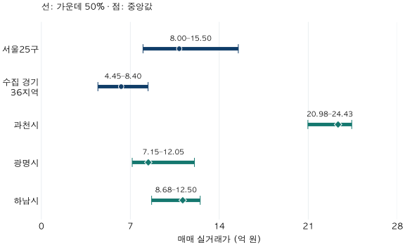

수도권 가격 지도 · 지역 가격의 겹침
서울·경기 84㎡ 아파트 가격, 어디까지 겹칠까?
2026년 상반기 전용84㎡ 이상85㎡ 미만 거래로 서울25구와 수집 경기36지역의 중앙값·가운데50% 구간을 비교합니다. 과천·광명·하남 사례와61지역 전체 표를 확인하세요.
분석 기간 · 2026년 1~6월 계약 | 자료 기준일 · 2026-10-04
서울에서 보던 예산으로 경기도에서는 어떤 아파트를 찾을 수 있을까요? 2026년 상반기 전용 84㎡대 매매를 모으면 중앙값은 서울 25개 구 10억 8,500만 원, 수집 대상 경기 36개 시·구 6억 2,800만 원입니다. 하지만 두 대표값만으로 ‘서울 가격’과 ‘경기 가격’의 경계를 그으면 상당한 차이를 놓칩니다.
84형 기준으로 넓혀도 서울과 경기는 한 줄로 나뉠까요?
비교 기준: 59형은 전용 17·18평형, 84형은 전용 25·26평형입니다(정확한 범위와 예외). 같은 계약 기간에서 면적 선택만 비교했으며, 전후 시점의 가격 변화가 아닙니다. 아래 범위는 0.5억 원 단위의 표시 구간으로, 왼쪽 이상·오른쪽 미만입니다. 신뢰구간이나 실제 매물 호가가 아닙니다.
2026년 상반기 표준 84형 중앙값은 서울 10.5~11.0억 원, 수집 경기 지역 6.0~6.5억 원 구간입니다. 두 범위 모두 기존 84㎡대와 같은 표시 구간에 남습니다. 광역 단위의 중앙값 차이라는 큰 그림은 이 해상도에서 유지됩니다.
그렇다고 모든 경기 아파트가 모든 서울 아파트보다 싸다는 뜻은 아닙니다. 중앙값은 분포 한가운데를 요약한 값입니다. 아래 표에서 구별 중앙값과 하위·상위 25%를 함께 보고, 같은 예산에 들어오는 생활권을 골라야 합니다.
광역 평균의 안정성과 개별 지역의 안정성은 별개입니다. 예를 들어 성남의 도시 합산 중앙값은 면적 범위를 넓히자 더 높은 표시 구간으로 바뀝니다. 서울·경기라는 이름보다 출퇴근 범위 안의 지역과 주택 조건으로 다시 좁혀 보세요.
| 비교 대상 | 계약 기간 | 새 면적 기준 | 지표 | 기존 1㎡ 폭 | 표준 면적 묶음 | 새 기준 표본 |
|---|---|---|---|---|---|---|
| 서울 | 2026 상반기 | 84형 | 하위 25% | 8.0~8.5 | 7.5~8.0 | 40건 이상 |
| 서울 | 2026 상반기 | 84형 | 중앙값 | 10.5~11.0 | 10.5~11.0 | 40건 이상 |
| 서울 | 2026 상반기 | 84형 | 상위 25% | 15.5~16.0 | 15.5~16.0 | 40건 이상 |
| 수집 경기 | 2026 상반기 | 84형 | 하위 25% | 4.0~4.5 | 4.0~4.5 | 40건 이상 |
| 수집 경기 | 2026 상반기 | 84형 | 중앙값 | 6.0~6.5 | 6.0~6.5 | 40건 이상 |
| 수집 경기 | 2026 상반기 | 84형 | 상위 25% | 8.0~8.5 | 8.0~8.5 | 40건 이상 |
서울·경기 중앙값과 가운데 50% 183행 보기
| 비교 대상 | 계약 기간 | 새 면적 기준 | 지표 | 기존 1㎡ 폭 | 표준 면적 묶음 | 새 기준 표본 |
|---|---|---|---|---|---|---|
| 강남구 | 2026 상반기 | 84형 | 하위 25% | 미공개 | 미공개 | 공개 기준 미충족 |
| 강남구 | 2026 상반기 | 84형 | 중앙값 | 미공개 | 미공개 | 공개 기준 미충족 |
| 강남구 | 2026 상반기 | 84형 | 상위 25% | 미공개 | 미공개 | 공개 기준 미충족 |
| 강동구 | 2026 상반기 | 84형 | 하위 25% | 11.5~12.0 | 10.0~10.5 | 40건 이상 |
| 강동구 | 2026 상반기 | 84형 | 중앙값 | 15.0~15.5 | 14.5~15.0 | 40건 이상 |
| 강동구 | 2026 상반기 | 84형 | 상위 25% | 18.5~19.0 | 18.0~18.5 | 40건 이상 |
| 강북구 | 2026 상반기 | 84형 | 하위 25% | 미공개 | 미공개 | 공개 기준 미충족 |
| 강북구 | 2026 상반기 | 84형 | 중앙값 | 미공개 | 미공개 | 공개 기준 미충족 |
| 강북구 | 2026 상반기 | 84형 | 상위 25% | 미공개 | 미공개 | 공개 기준 미충족 |
| 강서구 | 2026 상반기 | 84형 | 하위 25% | 8.5~9.0 | 8.0~8.5 | 40건 이상 |
| 강서구 | 2026 상반기 | 84형 | 중앙값 | 10.0~10.5 | 10.0~10.5 | 40건 이상 |
| 강서구 | 2026 상반기 | 84형 | 상위 25% | 12.5~13.0 | 12.5~13.0 | 40건 이상 |
| 고양시 덕양구 | 2026 상반기 | 84형 | 하위 25% | 5.0~5.5 | 5.0~5.5 | 40건 이상 |
| 고양시 덕양구 | 2026 상반기 | 84형 | 중앙값 | 7.0~7.5 | 7.0~7.5 | 40건 이상 |
| 고양시 덕양구 | 2026 상반기 | 84형 | 상위 25% | 8.5~9.0 | 8.5~9.0 | 40건 이상 |
| 고양시 일산동구 | 2026 상반기 | 84형 | 하위 25% | 미공개 | 미공개 | 공개 기준 미충족 |
| 고양시 일산동구 | 2026 상반기 | 84형 | 중앙값 | 미공개 | 미공개 | 공개 기준 미충족 |
| 고양시 일산동구 | 2026 상반기 | 84형 | 상위 25% | 미공개 | 미공개 | 공개 기준 미충족 |
| 고양시 일산서구 | 2026 상반기 | 84형 | 하위 25% | 3.0~3.5 | 3.0~3.5 | 40건 이상 |
| 고양시 일산서구 | 2026 상반기 | 84형 | 중앙값 | 4.0~4.5 | 4.0~4.5 | 40건 이상 |
| 고양시 일산서구 | 2026 상반기 | 84형 | 상위 25% | 4.5~5.0 | 4.5~5.0 | 40건 이상 |
| 과천시 | 2026 상반기 | 84형 | 하위 25% | 미공개 | 미공개 | 공개 기준 미충족 |
| 과천시 | 2026 상반기 | 84형 | 중앙값 | 미공개 | 미공개 | 공개 기준 미충족 |
| 과천시 | 2026 상반기 | 84형 | 상위 25% | 미공개 | 미공개 | 공개 기준 미충족 |
| 관악구 | 2026 상반기 | 84형 | 하위 25% | 7.5~8.0 | 7.0~7.5 | 40건 이상 |
| 관악구 | 2026 상반기 | 84형 | 중앙값 | 10.0~10.5 | 9.5~10.0 | 40건 이상 |
| 관악구 | 2026 상반기 | 84형 | 상위 25% | 12.0~12.5 | 11.5~12.0 | 40건 이상 |
| 광명시 | 2026 상반기 | 84형 | 하위 25% | 7.0~7.5 | 7.0~7.5 | 40건 이상 |
| 광명시 | 2026 상반기 | 84형 | 중앙값 | 8.0~8.5 | 8.0~8.5 | 40건 이상 |
| 광명시 | 2026 상반기 | 84형 | 상위 25% | 12.0~12.5 | 12.0~12.5 | 40건 이상 |
| 광주시 | 2026 상반기 | 84형 | 하위 25% | 3.0~3.5 | 3.0~3.5 | 40건 이상 |
| 광주시 | 2026 상반기 | 84형 | 중앙값 | 4.0~4.5 | 4.0~4.5 | 40건 이상 |
| 광주시 | 2026 상반기 | 84형 | 상위 25% | 5.5~6.0 | 5.5~6.0 | 40건 이상 |
| 광진구 | 2026 상반기 | 84형 | 하위 25% | 미공개 | 미공개 | 공개 기준 미충족 |
| 광진구 | 2026 상반기 | 84형 | 중앙값 | 미공개 | 미공개 | 공개 기준 미충족 |
| 광진구 | 2026 상반기 | 84형 | 상위 25% | 21.0~21.5 | 21.0~21.5 | 40건 이상 |
| 구로구 | 2026 상반기 | 84형 | 하위 25% | 6.5~7.0 | 6.5~7.0 | 40건 이상 |
| 구로구 | 2026 상반기 | 84형 | 중앙값 | 7.5~8.0 | 7.5~8.0 | 40건 이상 |
| 구로구 | 2026 상반기 | 84형 | 상위 25% | 9.0~9.5 | 9.0~9.5 | 40건 이상 |
| 구리시 | 2026 상반기 | 84형 | 하위 25% | 6.5~7.0 | 6.5~7.0 | 40건 이상 |
| 구리시 | 2026 상반기 | 84형 | 중앙값 | 7.0~7.5 | 7.0~7.5 | 40건 이상 |
| 구리시 | 2026 상반기 | 84형 | 상위 25% | 8.0~8.5 | 8.0~8.5 | 40건 이상 |
| 군포시 | 2026 상반기 | 84형 | 하위 25% | 4.5~5.0 | 4.5~5.0 | 40건 이상 |
| 군포시 | 2026 상반기 | 84형 | 중앙값 | 5.5~6.0 | 5.5~6.0 | 40건 이상 |
| 군포시 | 2026 상반기 | 84형 | 상위 25% | 미공개 | 미공개 | 공개 기준 미충족 |
| 금천구 | 2026 상반기 | 84형 | 하위 25% | 5.5~6.0 | 5.5~6.0 | 40건 이상 |
| 금천구 | 2026 상반기 | 84형 | 중앙값 | 7.0~7.5 | 7.0~7.5 | 40건 이상 |
| 금천구 | 2026 상반기 | 84형 | 상위 25% | 미공개 | 9.0~9.5 | 40건 이상 |
| 김포시 | 2026 상반기 | 84형 | 하위 25% | 미공개 | 미공개 | 공개 기준 미충족 |
| 김포시 | 2026 상반기 | 84형 | 중앙값 | 미공개 | 미공개 | 공개 기준 미충족 |
| 김포시 | 2026 상반기 | 84형 | 상위 25% | 미공개 | 미공개 | 공개 기준 미충족 |
| 남양주시 | 2026 상반기 | 84형 | 하위 25% | 4.0~4.5 | 4.0~4.5 | 40건 이상 |
| 남양주시 | 2026 상반기 | 84형 | 중앙값 | 5.5~6.0 | 5.5~6.0 | 40건 이상 |
| 남양주시 | 2026 상반기 | 84형 | 상위 25% | 8.5~9.0 | 8.5~9.0 | 40건 이상 |
| 노원구 | 2026 상반기 | 84형 | 하위 25% | 6.5~7.0 | 6.5~7.0 | 40건 이상 |
| 노원구 | 2026 상반기 | 84형 | 중앙값 | 8.5~9.0 | 8.0~8.5 | 40건 이상 |
| 노원구 | 2026 상반기 | 84형 | 상위 25% | 9.5~10.0 | 9.5~10.0 | 40건 이상 |
| 도봉구 | 2026 상반기 | 84형 | 하위 25% | 5.0~5.5 | 5.0~5.5 | 40건 이상 |
| 도봉구 | 2026 상반기 | 84형 | 중앙값 | 6.0~6.5 | 6.0~6.5 | 40건 이상 |
| 도봉구 | 2026 상반기 | 84형 | 상위 25% | 8.0~8.5 | 8.0~8.5 | 40건 이상 |
| 동대문구 | 2026 상반기 | 84형 | 하위 25% | 8.5~9.0 | 8.5~9.0 | 40건 이상 |
| 동대문구 | 2026 상반기 | 84형 | 중앙값 | 10.5~11.0 | 10.5~11.0 | 40건 이상 |
| 동대문구 | 2026 상반기 | 84형 | 상위 25% | 미공개 | 13.0~13.5 | 40건 이상 |
| 동작구 | 2026 상반기 | 84형 | 하위 25% | 13.0~13.5 | 13.0~13.5 | 40건 이상 |
| 동작구 | 2026 상반기 | 84형 | 중앙값 | 15.0~15.5 | 15.0~15.5 | 40건 이상 |
| 동작구 | 2026 상반기 | 84형 | 상위 25% | 17.5~18.0 | 17.5~18.0 | 40건 이상 |
| 마포구 | 2026 상반기 | 84형 | 하위 25% | 11.5~12.0 | 11.5~12.0 | 40건 이상 |
| 마포구 | 2026 상반기 | 84형 | 중앙값 | 15.0~15.5 | 15.0~15.5 | 40건 이상 |
| 마포구 | 2026 상반기 | 84형 | 상위 25% | 미공개 | 20.0~20.5 | 40건 이상 |
| 부천시 소사구 | 2026 상반기 | 84형 | 하위 25% | 미공개 | 미공개 | 공개 기준 미충족 |
| 부천시 소사구 | 2026 상반기 | 84형 | 중앙값 | 미공개 | 미공개 | 공개 기준 미충족 |
| 부천시 소사구 | 2026 상반기 | 84형 | 상위 25% | 미공개 | 미공개 | 공개 기준 미충족 |
| 부천시 오정구 | 2026 상반기 | 84형 | 하위 25% | 미공개 | 미공개 | 공개 기준 미충족 |
| 부천시 오정구 | 2026 상반기 | 84형 | 중앙값 | 미공개 | 미공개 | 공개 기준 미충족 |
| 부천시 오정구 | 2026 상반기 | 84형 | 상위 25% | 미공개 | 미공개 | 공개 기준 미충족 |
| 부천시 원미구 | 2026 상반기 | 84형 | 하위 25% | 5.5~6.0 | 5.5~6.0 | 40건 이상 |
| 부천시 원미구 | 2026 상반기 | 84형 | 중앙값 | 6.5~7.0 | 6.5~7.0 | 40건 이상 |
| 부천시 원미구 | 2026 상반기 | 84형 | 상위 25% | 7.5~8.0 | 7.5~8.0 | 40건 이상 |
| 서대문구 | 2026 상반기 | 84형 | 하위 25% | 8.5~9.0 | 8.5~9.0 | 40건 이상 |
| 서대문구 | 2026 상반기 | 84형 | 중앙값 | 10.5~11.0 | 10.5~11.0 | 40건 이상 |
| 서대문구 | 2026 상반기 | 84형 | 상위 25% | 14.0~14.5 | 14.0~14.5 | 40건 이상 |
| 서초구 | 2026 상반기 | 84형 | 하위 25% | 미공개 | 미공개 | 공개 기준 미충족 |
| 서초구 | 2026 상반기 | 84형 | 중앙값 | 미공개 | 미공개 | 공개 기준 미충족 |
| 서초구 | 2026 상반기 | 84형 | 상위 25% | 미공개 | 미공개 | 공개 기준 미충족 |
| 성남시 분당구 | 2026 상반기 | 84형 | 하위 25% | 14.5~15.0 | 14.5~15.0 | 40건 이상 |
| 성남시 분당구 | 2026 상반기 | 84형 | 중앙값 | 17.5~18.0 | 17.5~18.0 | 40건 이상 |
| 성남시 분당구 | 2026 상반기 | 84형 | 상위 25% | 19.5~20.0 | 19.5~20.0 | 40건 이상 |
| 성남시 수정구 | 2026 상반기 | 84형 | 하위 25% | 7.5~8.0 | 7.5~8.0 | 40건 이상 |
| 성남시 수정구 | 2026 상반기 | 84형 | 중앙값 | 미공개 | 미공개 | 공개 기준 미충족 |
| 성남시 수정구 | 2026 상반기 | 84형 | 상위 25% | 미공개 | 14.5~15.0 | 40건 이상 |
| 성남시 중원구 | 2026 상반기 | 84형 | 하위 25% | 7.5~8.0 | 7.0~7.5 | 40건 이상 |
| 성남시 중원구 | 2026 상반기 | 84형 | 중앙값 | 8.5~9.0 | 8.5~9.0 | 40건 이상 |
| 성남시 중원구 | 2026 상반기 | 84형 | 상위 25% | 미공개 | 10.0~10.5 | 40건 이상 |
| 성동구 | 2026 상반기 | 84형 | 하위 25% | 15.0~15.5 | 15.0~15.5 | 40건 이상 |
| 성동구 | 2026 상반기 | 84형 | 중앙값 | 18.0~18.5 | 18.0~18.5 | 40건 이상 |
| 성동구 | 2026 상반기 | 84형 | 상위 25% | 미공개 | 미공개 | 공개 기준 미충족 |
| 성북구 | 2026 상반기 | 84형 | 하위 25% | 8.0~8.5 | 8.0~8.5 | 40건 이상 |
| 성북구 | 2026 상반기 | 84형 | 중앙값 | 9.5~10.0 | 9.5~10.0 | 40건 이상 |
| 성북구 | 2026 상반기 | 84형 | 상위 25% | 11.0~11.5 | 11.0~11.5 | 40건 이상 |
| 송파구 | 2026 상반기 | 84형 | 하위 25% | 미공개 | 16.0~16.5 | 40건 이상 |
| 송파구 | 2026 상반기 | 84형 | 중앙값 | 미공개 | 24.5~25.0 | 40건 이상 |
| 송파구 | 2026 상반기 | 84형 | 상위 25% | 30.5~31.0 | 31.0~31.5 | 40건 이상 |
| 수원시 권선구 | 2026 상반기 | 84형 | 하위 25% | 4.0~4.5 | 4.0~4.5 | 40건 이상 |
| 수원시 권선구 | 2026 상반기 | 84형 | 중앙값 | 5.5~6.0 | 5.5~6.0 | 40건 이상 |
| 수원시 권선구 | 2026 상반기 | 84형 | 상위 25% | 6.0~6.5 | 6.0~6.5 | 40건 이상 |
| 수원시 영통구 | 2026 상반기 | 84형 | 하위 25% | 미공개 | 미공개 | 공개 기준 미충족 |
| 수원시 영통구 | 2026 상반기 | 84형 | 중앙값 | 미공개 | 미공개 | 공개 기준 미충족 |
| 수원시 영통구 | 2026 상반기 | 84형 | 상위 25% | 미공개 | 미공개 | 공개 기준 미충족 |
| 수원시 장안구 | 2026 상반기 | 84형 | 하위 25% | 4.5~5.0 | 4.5~5.0 | 40건 이상 |
| 수원시 장안구 | 2026 상반기 | 84형 | 중앙값 | 5.5~6.0 | 5.5~6.0 | 40건 이상 |
| 수원시 장안구 | 2026 상반기 | 84형 | 상위 25% | 7.5~8.0 | 7.5~8.0 | 40건 이상 |
| 수원시 팔달구 | 2026 상반기 | 84형 | 하위 25% | 6.0~6.5 | 5.5~6.0 | 40건 이상 |
| 수원시 팔달구 | 2026 상반기 | 84형 | 중앙값 | 7.0~7.5 | 6.5~7.0 | 40건 이상 |
| 수원시 팔달구 | 2026 상반기 | 84형 | 상위 25% | 8.5~9.0 | 8.5~9.0 | 40건 이상 |
| 안산시 단원구 | 2026 상반기 | 84형 | 하위 25% | 4.0~4.5 | 4.0~4.5 | 40건 이상 |
| 안산시 단원구 | 2026 상반기 | 84형 | 중앙값 | 5.0~5.5 | 5.0~5.5 | 40건 이상 |
| 안산시 단원구 | 2026 상반기 | 84형 | 상위 25% | 6.0~6.5 | 6.0~6.5 | 40건 이상 |
| 안산시 상록구 | 2026 상반기 | 84형 | 하위 25% | 4.0~4.5 | 3.5~4.0 | 40건 이상 |
| 안산시 상록구 | 2026 상반기 | 84형 | 중앙값 | 4.5~5.0 | 4.5~5.0 | 40건 이상 |
| 안산시 상록구 | 2026 상반기 | 84형 | 상위 25% | 6.0~6.5 | 6.0~6.5 | 40건 이상 |
| 안양시 동안구 | 2026 상반기 | 84형 | 하위 25% | 7.0~7.5 | 7.0~7.5 | 40건 이상 |
| 안양시 동안구 | 2026 상반기 | 84형 | 중앙값 | 9.0~9.5 | 8.5~9.0 | 40건 이상 |
| 안양시 동안구 | 2026 상반기 | 84형 | 상위 25% | 11.0~11.5 | 11.0~11.5 | 40건 이상 |
| 안양시 만안구 | 2026 상반기 | 84형 | 하위 25% | 5.0~5.5 | 5.0~5.5 | 40건 이상 |
| 안양시 만안구 | 2026 상반기 | 84형 | 중앙값 | 6.0~6.5 | 6.0~6.5 | 40건 이상 |
| 안양시 만안구 | 2026 상반기 | 84형 | 상위 25% | 8.0~8.5 | 8.0~8.5 | 40건 이상 |
| 양천구 | 2026 상반기 | 84형 | 하위 25% | 7.5~8.0 | 7.5~8.0 | 40건 이상 |
| 양천구 | 2026 상반기 | 84형 | 중앙값 | 11.5~12.0 | 11.0~11.5 | 40건 이상 |
| 양천구 | 2026 상반기 | 84형 | 상위 25% | 14.0~14.5 | 14.0~14.5 | 40건 이상 |
| 영등포구 | 2026 상반기 | 84형 | 하위 25% | 9.5~10.0 | 9.5~10.0 | 40건 이상 |
| 영등포구 | 2026 상반기 | 84형 | 중앙값 | 12.5~13.0 | 12.5~13.0 | 40건 이상 |
| 영등포구 | 2026 상반기 | 84형 | 상위 25% | 15.5~16.0 | 15.5~16.0 | 40건 이상 |
| 용산구 | 2026 상반기 | 84형 | 하위 25% | 미공개 | 미공개 | 공개 기준 미충족 |
| 용산구 | 2026 상반기 | 84형 | 중앙값 | 미공개 | 미공개 | 공개 기준 미충족 |
| 용산구 | 2026 상반기 | 84형 | 상위 25% | 미공개 | 미공개 | 공개 기준 미충족 |
| 용인시 기흥구 | 2026 상반기 | 84형 | 하위 25% | 4.5~5.0 | 4.5~5.0 | 40건 이상 |
| 용인시 기흥구 | 2026 상반기 | 84형 | 중앙값 | 6.0~6.5 | 6.0~6.5 | 40건 이상 |
| 용인시 기흥구 | 2026 상반기 | 84형 | 상위 25% | 8.0~8.5 | 8.0~8.5 | 40건 이상 |
| 용인시 수지구 | 2026 상반기 | 84형 | 하위 25% | 8.0~8.5 | 7.5~8.0 | 40건 이상 |
| 용인시 수지구 | 2026 상반기 | 84형 | 중앙값 | 9.0~9.5 | 9.0~9.5 | 40건 이상 |
| 용인시 수지구 | 2026 상반기 | 84형 | 상위 25% | 11.5~12.0 | 11.5~12.0 | 40건 이상 |
| 용인시 처인구 | 2026 상반기 | 84형 | 하위 25% | 3.0~3.5 | 3.0~3.5 | 40건 이상 |
| 용인시 처인구 | 2026 상반기 | 84형 | 중앙값 | 4.0~4.5 | 4.0~4.5 | 40건 이상 |
| 용인시 처인구 | 2026 상반기 | 84형 | 상위 25% | 5.0~5.5 | 5.0~5.5 | 40건 이상 |
| 은평구 | 2026 상반기 | 84형 | 하위 25% | 7.5~8.0 | 7.5~8.0 | 40건 이상 |
| 은평구 | 2026 상반기 | 84형 | 중앙값 | 9.0~9.5 | 9.0~9.5 | 40건 이상 |
| 은평구 | 2026 상반기 | 84형 | 상위 25% | 11.5~12.0 | 11.5~12.0 | 40건 이상 |
| 의왕시 | 2026 상반기 | 84형 | 하위 25% | 5.5~6.0 | 5.5~6.0 | 40건 이상 |
| 의왕시 | 2026 상반기 | 84형 | 중앙값 | 7.5~8.0 | 7.5~8.0 | 40건 이상 |
| 의왕시 | 2026 상반기 | 84형 | 상위 25% | 10.0~10.5 | 10.0~10.5 | 40건 이상 |
| 의정부시 | 2026 상반기 | 84형 | 하위 25% | 3.0~3.5 | 3.0~3.5 | 40건 이상 |
| 의정부시 | 2026 상반기 | 84형 | 중앙값 | 4.0~4.5 | 4.0~4.5 | 40건 이상 |
| 의정부시 | 2026 상반기 | 84형 | 상위 25% | 5.0~5.5 | 5.0~5.5 | 40건 이상 |
| 종로구 | 2026 상반기 | 84형 | 하위 25% | 미공개 | 미공개 | 공개 기준 미충족 |
| 종로구 | 2026 상반기 | 84형 | 중앙값 | 미공개 | 미공개 | 공개 기준 미충족 |
| 종로구 | 2026 상반기 | 84형 | 상위 25% | 미공개 | 미공개 | 공개 기준 미충족 |
| 중구 | 2026 상반기 | 84형 | 하위 25% | 미공개 | 미공개 | 공개 기준 미충족 |
| 중구 | 2026 상반기 | 84형 | 중앙값 | 미공개 | 미공개 | 공개 기준 미충족 |
| 중구 | 2026 상반기 | 84형 | 상위 25% | 미공개 | 미공개 | 공개 기준 미충족 |
| 중랑구 | 2026 상반기 | 84형 | 하위 25% | 6.5~7.0 | 6.5~7.0 | 40건 이상 |
| 중랑구 | 2026 상반기 | 84형 | 중앙값 | 7.5~8.0 | 7.5~8.0 | 40건 이상 |
| 중랑구 | 2026 상반기 | 84형 | 상위 25% | 8.5~9.0 | 8.5~9.0 | 40건 이상 |
| 파주시 | 2026 상반기 | 84형 | 하위 25% | 미공개 | 미공개 | 공개 기준 미충족 |
| 파주시 | 2026 상반기 | 84형 | 중앙값 | 미공개 | 미공개 | 공개 기준 미충족 |
| 파주시 | 2026 상반기 | 84형 | 상위 25% | 미공개 | 미공개 | 공개 기준 미충족 |
| 평택시 | 2026 상반기 | 84형 | 하위 25% | 2.5~3.0 | 2.5~3.0 | 40건 이상 |
| 평택시 | 2026 상반기 | 84형 | 중앙값 | 3.5~4.0 | 3.5~4.0 | 40건 이상 |
| 평택시 | 2026 상반기 | 84형 | 상위 25% | 5.0~5.5 | 5.0~5.5 | 40건 이상 |
| 하남시 | 2026 상반기 | 84형 | 하위 25% | 미공개 | 미공개 | 공개 기준 미충족 |
| 하남시 | 2026 상반기 | 84형 | 중앙값 | 미공개 | 미공개 | 공개 기준 미충족 |
| 하남시 | 2026 상반기 | 84형 | 상위 25% | 미공개 | 미공개 | 공개 기준 미충족 |
| 화성시 동탄구 | 2026 상반기 | 84형 | 하위 25% | 6.0~6.5 | 6.0~6.5 | 40건 이상 |
| 화성시 동탄구 | 2026 상반기 | 84형 | 중앙값 | 7.5~8.0 | 7.0~7.5 | 40건 이상 |
| 화성시 동탄구 | 2026 상반기 | 84형 | 상위 25% | 9.0~9.5 | 9.0~9.5 | 40건 이상 |
| 화성시 만세구 | 2026 상반기 | 84형 | 하위 25% | 3.0~3.5 | 3.0~3.5 | 40건 이상 |
| 화성시 만세구 | 2026 상반기 | 84형 | 중앙값 | 3.5~4.0 | 3.5~4.0 | 40건 이상 |
| 화성시 만세구 | 2026 상반기 | 84형 | 상위 25% | 5.0~5.5 | 5.0~5.5 | 40건 이상 |
| 화성시 병점구 | 2026 상반기 | 84형 | 하위 25% | 3.5~4.0 | 3.5~4.0 | 40건 이상 |
| 화성시 병점구 | 2026 상반기 | 84형 | 중앙값 | 4.0~4.5 | 4.0~4.5 | 40건 이상 |
| 화성시 병점구 | 2026 상반기 | 84형 | 상위 25% | 7.0~7.5 | 7.0~7.5 | 40건 이상 |
| 화성시 효행구 | 2026 상반기 | 84형 | 하위 25% | 2.5~3.0 | 2.5~3.0 | 40건 이상 |
| 화성시 효행구 | 2026 상반기 | 84형 | 중앙값 | 3.5~4.0 | 3.0~3.5 | 40건 이상 |
| 화성시 효행구 | 2026 상반기 | 84형 | 상위 25% | 4.0~4.5 | 4.0~4.5 | 40건 이상 |
면적 기준 재분석의 자료와 공개 범위
기존 글과 같은 2026년 10월 4일 기준 자료에서 면적 묶음을 다시 골랐습니다. 계약 한 건을 같은 비중으로 세고 분위수를 계산했으며, 계약·지역·면적·가격·정제 상태와 집계값을 별도 경로로 대조했습니다. 구별·연식별 조건은 표에 표시했습니다.
가격은 40건 이상·2개 이상 단지를 기본으로 하며, 순위와 공통 단지 비교에는 10개 이상 단지를 요구했습니다. 표시 구간과 분위수 양쪽에도 충분한 거래가 있어야 합니다. 새로 포함되거나 빠지는 소수 거래를 기존 공개값과 결합해 좁혀 읽을 수 있는 비교는 함께 가렸습니다. 따라서 미공개는 거래가 없거나 가격이 낮다는 뜻이 아닙니다.
새로운 정확 건수·금액 합계·평균은 공개하지 않고 가격 범위와 표본 충족 여부만 제공합니다. 개인이나 개별 거래를 확인하는 자료가 아닙니다. 면적 기준 비교 집계(JSON)에서 전체 범위를 확인할 수 있습니다. 아래에 이어지는 기존 그림과 정밀 수치는 당시의 1㎡ 폭 분석이며 새 표와 면적 기준이 다릅니다.
‘84㎡ 가격’의 면적과 기간은 어떻게 맞췄나요?
이 글은 전용 84.00㎡ 이상 85.00㎡ 미만인 84㎡대를 비교합니다. 흔히 ‘84형’이라 부르는 집 가운데 가장 흔한 범위만 고른 좁은 기준으로, 이 블로그의 표준 84형(전용 25·26평형, 80.99~87.60㎡)보다 좁습니다. 82~83㎡나 85㎡대 주택형이 많은 오래된 단지는 덜 들어가므로, 구축 단지가 많은 지역일수록 대표값이 달라질 수 있습니다(용어집). 공급면적 34평과도 다릅니다. 두 집의 면적 표시가 다르다면 전용·공급면적과 평 환산부터 확인하세요.
계약 기간은 모두 2026년 1~6월입니다. 원천에 있는 서울 25개 구와 경기 36개 시·구를 사용했으며, 인천과 수집하지 않은 경기 지역은 빠져 있습니다. 경기 36지역을 경기도 36개 도시나 경기도 전체라고 부르지 않습니다. 구가 있는 도시는 구별로 구분하고, 지역은 현재 단지 정보의 소속으로 통일했습니다.
중앙값이 달라도 가격 구간은 겹칠까요?
중앙값은 거래를 가격순으로 놓았을 때 가운데 값입니다. 여기에 하위 25% 지점과 상위 25% 지점을 더하면 가운데 50%의 가격 구간을 볼 수 있습니다. 이를 사분위 범위(IQR)라고 합니다. 아래 선은 가장 싼 집부터 가장 비싼 집까지의 범위가 아닙니다.

| 지역 | 건수 | 하위 25% | 중앙값 | 상위 25% |
|---|---|---|---|---|
| 서울25구 | 11,378 | 8.00 | 10.85 | 15.50 |
| 수집 경기36지역 | 26,867 | 4.45 | 6.28 | 8.40 |
| 과천시 | 68 | 20.98 | 23.35 | 24.43 |
| 광명시 | 586 | 7.15 | 8.42 | 12.05 |
| 하남시 | 636 | 8.68 | 11.13 | 12.50 |
좁은 화면에서는 표를 좌우로 움직여 볼 수 있습니다. 가격은 소수 둘째 자리로 반올림했으며, 계산은 반올림 전 값으로 했습니다. 사분위 범위는 거래가격의 분포이며 통계적 신뢰구간이 아닙니다.
두 구간이 겹치는 부분은 ‘하한 중 큰 값’부터 ‘상한 중 작은 값’까지입니다. 서울과 수집 경기의 경우 큰 하한은 8.00억, 작은 상한은 8.40억이므로 8.00~8.40억 원입니다. 하한이 상한보다 크면 가운데 50% 구간은 겹치지 않습니다.
이 계산은 구간의 교집합입니다. 4천만 원의 폭을 보고 두 시장 거래의 몇 %가 겹치는지 말할 수는 없습니다. 구간 안의 거래가 고르게 퍼져 있다는 가정을 하지 않았기 때문입니다. 가운데 50%가 겹치지 않더라도 양쪽 바깥의 거래가격은 겹칠 수 있습니다.
과천·광명·하남은 서울의 어느 가격 구간과 겹칠까요?
광명·하남: 서울 전체 구간과 겹치지만 같은 집은 아닙니다
광명의 가운데 50% 구간은 약 7.15~12.05억 원, 하남은 약 8.68~12.50억 원입니다. 서울 전체 8.00~15.50억 원과 각각 일부 또는 전부 겹칩니다. 이 범위에서 서울과 경기의 후보를 함께 찾을 수 있다는 출발점은 되지만, 같은 금액으로 같은 주거 조건을 얻는다는 보장은 아닙니다.
예를 들어 광명의 중앙값 8.42억 원과 노원구 8.50억 원은 가깝습니다. 그러나 광명의 가운데 50% 구간은 약 7.15~12.05억 원, 노원구는 약 6.90~9.84억 원입니다. 중앙값 하나가 비슷해도 분포의 폭과 위치는 다를 수 있습니다. 이 두 지역은 계산을 설명하는 사례이며 서로를 대체할 후보라는 추천은 아닙니다.
과천: 서울 전체보다 높아도 모든 서울보다 높은 것은 아닙니다
과천의 가운데 50%는 약 20.98~24.43억 원으로 서울 전체 구간과 겹치지 않습니다. 반면 송파구의 구간은 16.40~30.50억 원이어서 과천 구간을 포함합니다. 비교 상대를 서울 전체에서 한 구로 바꾸면 겹침의 답이 바뀌는 사례입니다. 과천 중앙값 23.35억 원과 송파구 23.80억 원 역시 현재 매물의 가격표는 아닙니다.
광역 중앙값은 지역별 중앙값을 평균해서 만들지 않았습니다. 서울 11,378건, 수집 경기 26,867건을 각각 직접 모아 계산했습니다. 거래가 많은 지역·단지의 계약이 그만큼 더 많이 반영됩니다. 지역 통계를 다시 합칠 때의 함정을 함께 읽으면 대표값의 차이를 이해하기 쉽습니다.
관심 지역은 전체 표에서 함께 확인하세요
아래 표는 순위가 아니라 지역 코드 순서입니다. 세 도시 사례 밖의 지역도 같은 기준으로 볼 수 있도록 서울 25개 구와 수집 경기 36개 시·구를 모두 실었습니다. 각 행은 47건 이상이며, 지역명은 현재 단지 정보를 따릅니다.
서울 25개 구의 건수·중앙값·가운데 50% 펼치기
| 지역 | 건수 | 하위 25% | 중앙값 | 상위 25% |
|---|---|---|---|---|
| 종로구 | 88 | 10.78 | 12.23 | 15.55 |
| 중구 | 133 | 11.85 | 16.10 | 17.30 |
| 용산구 | 126 | 17.50 | 19.58 | 25.33 |
| 성동구 | 313 | 15.00 | 18.00 | 21.70 |
| 광진구 | 158 | 15.06 | 18.60 | 21.00 |
| 동대문구 | 567 | 8.84 | 10.70 | 14.00 |
| 중랑구 | 515 | 6.70 | 7.50 | 8.50 |
| 성북구 | 839 | 8.45 | 9.75 | 11.48 |
| 강북구 | 402 | 6.80 | 7.50 | 9.00 |
| 도봉구 | 456 | 5.47 | 6.25 | 8.30 |
| 노원구 | 802 | 6.90 | 8.50 | 9.84 |
| 은평구 | 684 | 7.77 | 9.29 | 11.69 |
| 서대문구 | 538 | 8.75 | 10.99 | 14.40 |
| 마포구 | 352 | 11.70 | 15.30 | 20.55 |
| 양천구 | 455 | 8.00 | 11.90 | 14.43 |
| 강서구 | 726 | 8.59 | 10.44 | 12.75 |
| 구로구 | 733 | 6.80 | 7.85 | 9.33 |
| 금천구 | 216 | 5.70 | 7.20 | 9.70 |
| 영등포구 | 514 | 9.75 | 12.90 | 15.70 |
| 동작구 | 531 | 13.15 | 15.20 | 17.78 |
| 관악구 | 394 | 7.50 | 10.40 | 12.00 |
| 서초구 | 266 | 21.43 | 30.98 | 45.88 |
| 강남구 | 290 | 24.30 | 31.50 | 36.00 |
| 송파구 | 653 | 16.40 | 23.80 | 30.50 |
| 강동구 | 627 | 11.75 | 15.00 | 18.60 |
수집 경기 36개 시·구의 건수·중앙값·가운데 50% 펼치기
| 지역 | 건수 | 하위 25% | 중앙값 | 상위 25% |
|---|---|---|---|---|
| 수원시 장안구 | 520 | 4.94 | 5.97 | 7.74 |
| 수원시 권선구 | 1,002 | 4.30 | 5.60 | 6.40 |
| 수원시 팔달구 | 389 | 6.00 | 7.00 | 8.73 |
| 수원시 영통구 | 995 | 5.70 | 7.60 | 9.50 |
| 성남시 수정구 | 209 | 7.80 | 9.50 | 14.20 |
| 성남시 중원구 | 221 | 7.90 | 8.86 | 10.60 |
| 성남시 분당구 | 410 | 14.95 | 17.70 | 19.50 |
| 의정부시 | 814 | 3.40 | 4.10 | 5.18 |
| 안양시 만안구 | 457 | 5.27 | 6.40 | 8.40 |
| 안양시 동안구 | 803 | 7.06 | 9.00 | 11.25 |
| 부천시 원미구 | 632 | 5.98 | 6.80 | 7.65 |
| 부천시 소사구 | 369 | 5.48 | 6.10 | 7.30 |
| 부천시 오정구 | 47 | 5.50 | 6.20 | 7.49 |
| 광명시 | 586 | 7.15 | 8.42 | 12.05 |
| 평택시 | 1,429 | 2.50 | 3.50 | 5.04 |
| 안산시 상록구 | 226 | 4.00 | 4.94 | 6.42 |
| 안산시 단원구 | 368 | 4.40 | 5.38 | 6.30 |
| 고양시 덕양구 | 1,110 | 5.49 | 7.27 | 8.66 |
| 고양시 일산동구 | 354 | 4.30 | 6.07 | 7.85 |
| 고양시 일산서구 | 380 | 3.30 | 4.00 | 4.94 |
| 과천시 | 68 | 20.98 | 23.35 | 24.43 |
| 구리시 | 804 | 6.74 | 7.45 | 8.40 |
| 남양주시 | 2,293 | 4.10 | 5.75 | 8.60 |
| 군포시 | 356 | 4.95 | 5.60 | 7.35 |
| 의왕시 | 582 | 5.81 | 7.90 | 10.19 |
| 하남시 | 636 | 8.68 | 11.13 | 12.50 |
| 용인시 처인구 | 468 | 3.15 | 4.00 | 5.26 |
| 용인시 기흥구 | 2,290 | 4.80 | 6.15 | 8.20 |
| 용인시 수지구 | 1,065 | 8.00 | 9.35 | 11.50 |
| 파주시 | 1,075 | 2.91 | 3.99 | 5.78 |
| 김포시 | 981 | 4.00 | 4.59 | 5.90 |
| 화성시 만세구 | 333 | 3.20 | 3.98 | 5.05 |
| 화성시 효행구 | 435 | 2.83 | 3.52 | 4.48 |
| 화성시 병점구 | 803 | 3.68 | 4.45 | 7.10 |
| 화성시 동탄구 | 2,516 | 6.45 | 7.57 | 9.40 |
| 광주시 | 841 | 3.18 | 4.10 | 5.85 |
가장 중요한 반론: 같은 면적도 같은 주택은 아닙니다
기간과 면적을 맞춰도 연식, 층, 역까지의 거리, 수리 상태, 학군, 단지 규모가 다릅니다. 지역마다 신축이나 특정 단지 거래가 많이 잡힐 수도 있습니다. 같은 상반기 안에서도 어느 달에 거래가 몰렸는지가 다릅니다. 이번 표는 이런 조건을 보정한 표준주택 가격이나 지수가 아닙니다.
따라서 “서울보다 싸니 앞으로 따라 오른다”, “중앙값이 같으니 입지도 같다”라는 결론은 이 자료로 뒷받침되지 않습니다. 면적을 59형으로 바꾸거나 기간·연식 조건을 바꾸면 겹치는 지역과 구간도 달라질 수 있습니다. 과거 시기별로 겹침이 확대됐는지도 이번 한 기간 비교로는 알 수 없습니다.
거래된 집만 보았다는 점도 중요합니다. 표에 있는 가격에 지금 살 수 있는 매물이 있다는 뜻이 아닙니다. 관측 실거래와 호가·모형 추정값의 차이는 가격 종류별 확인 기준에서 따로 정리했습니다.
지역을 골랐다면 실제 단지 두 곳으로 좁혀 보세요
- 내 예산을 각 지역의 가운데 50% 구간과 나란히 적습니다. 구간 밖이면 후보가 없다고 단정하지 않습니다. 표가 숨긴 바깥 절반의 거래도 있습니다.
- 같은 전용면적과 가까운 계약월의 단지를 찾습니다. 이어서 연식·층·교통·관리 상태를 확인하고, 지역 중앙값을 개별 집의 적정가로 쓰지 않습니다.
- 거래 근거와 현재 제시 조건을 구분합니다. 건수, 계약일, 해제 여부와 현재 매물 조건을 다시 확인합니다.
- 구매비용과 생활비용을 별도로 적습니다. 취득·이사·수리 비용과 통근 조건은 가격 구간만으로 비교할 수 없습니다.
예산에 따라 거래된 집의 면적·연식이 어떻게 달랐는지는 서울 예산별 거래된 집의 모습에서 확인할 수 있습니다. 그 글은 전체 면적을 다룬 다른 모집단이므로 이번 표와 직접 합치지는 않습니다.
자료·분류 규칙·검증 방법 펼치기
- 원천: 국토교통부 아파트 매매 실거래가 상세 자료를 정제한 자체 집계입니다. 국토부 공식 발표 통계나 현재 매물 조회가 아닙니다.
- 대상: 2026년 1~6월 계약, 전용 84㎡대(84.00~84.99㎡). 정제 기준에 따라 해제·직거래·가격 비교에 부적합한 계약과 토지임대부를 제외했습니다. 이 면적·기간의 계약 가운데 서울 718건, 수집 경기 2,303건이 제외됐고, 각각 11,378건과 26,867건을 사용했습니다. 제외 사유는 겹칠 수 있어 사유별 건수를 더하지 않았습니다.
- 지역: 현재 단지 정보의 시·구 코드로 통일했습니다. 과거 단지 일련번호의 앞자리에서 지역을 추정하지 않았습니다. 인천 및 미수집 경기 지역은 분석 밖이며 표의 경기 합계는 수집 36지역만의 결과입니다.
- 통계: 계약 한 건에 같은 비중을 주고, 하위 25%·중앙값·상위 25%는 선형 보간으로 계산했습니다. 광역 값은 개별 거래를 모아 재계산했습니다. 공개 지역은 40건 이상을 요구했고 실제 최소 47건이었습니다. 반올림 전 값은 공개 집계 파일(JSON)에서 확인할 수 있습니다.
- 대조: 같은 원자료를 두 가지 방법으로 따로 계산해 면적·기간 선택, 건수, 분위수, 광역 합계가 일치하는지 확인했습니다. 61지역×6개월 원천 파일 366개 존재를 확인했으며, 이것이 모든 실제 거래의 포착을 보증하지는 않습니다. 개별 계약과 단지 식별자는 공개하지 않습니다.
- 시점: 자료 기준일 2026-10-04(2026년 9월 계약분까지 수록). 각 신고가 실제로 들어온 날짜는 확인하지 못했습니다. 최근 분기를 피해 6월에서 끝냈으며,6월 말에 알 수 있었던 자료만으로 계산한 것은 아닙니다. 과거 계약도 이후 수정될 수 있습니다.
분석·집필: 파파펭귄 (Nobot Kang). 에이전트로 집계 대조·계산·초안 검토를 보조했습니다. 공식 원천 확인일: 2026-10-09.